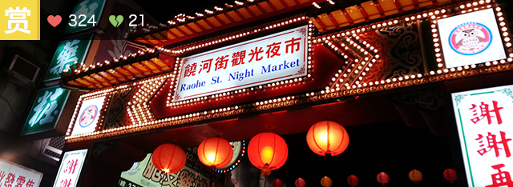

|
台 北
|

|


饶河街观光夜市
|
|||

饒河街觀光夜市位於台北市松山區饒河街，範圍從八德路四段至撫遠街交叉口的慈佑宮，全長約為600公尺，是台北是數一數二受歡迎的觀光夜市，更是台北市第二座成立的觀光夜市，每逢周末假日，饒河夜市總是人山人海，夜市已成為台灣的特點而聚集了許多外來的旅客，饒河街觀光夜市更是海內外遊客來到台灣旅遊的不二選擇。
饒河街的所在位置昔日稱為「錫口」，由於基隆港水深且地理位置接近河濱，因此成為宜蘭和基隆貨運至台北的轉運站，是當時重要的交通樞紐，因此商業發達是台北極盛之地；1895年台灣割讓給日本，進入日據時代，將此地改名為松山，漸漸地河岸淤積造成停泊船隻漸少，後期八德路又進行拓寬工程使得饒河街成為次要道路、商業活動不如以往繁盛，政府為了讓商家能再度重振興業，便在西元1987年成立饒河街觀光夜市，不僅讓商家感受昔日的錫口繁榮，也讓台
饒河街的所在位置昔日稱為「錫口」，由於基隆港水深且地理位置接近河濱，因此成為宜蘭和基隆貨運至台北的轉運站，是當時重要的交通樞紐，因此商業發達是台北極盛之地；1895年台灣割讓給日本，進入日據時代，將此地改名為松山，漸漸地河岸淤積造成停泊船隻漸少，後期八德路又進行拓寬工程使得饒河街成為次要道路、商業活動不如以往繁盛，政府為了讓商家能再度重振興業，便在西元1987年成立饒河街觀光夜市，不僅讓商家感受昔日的錫口繁榮，也讓台